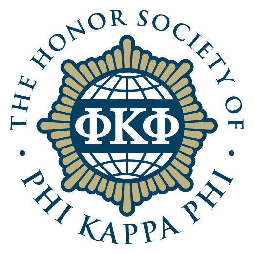

A fellowship awarded by the USC Provost Office to undergraduate researchers.
 Provost Research Fellowship
Provost Research Fellowship
A fellowship awarded by the USC Provost Office to undergraduate researchers.
 Alumni Scholarship
Alumni Scholarship
An undergraduate scholarship awarded by the USC Alumni Association.

ΦΚΦ Honor Society
Inducted into ΦΚΦ, an academic honor society restricted to the top 7.5% of the junior-year class.
 2019 Outstanding Student in General Chemistry
2019 Outstanding Student in General Chemistry
An award given by the USC Chemistry department to a single general chemistry student with exceptional performance.
 President's List
President's List
Awarded to Cal Poly students who make the Dean's list three quarters in a row.
 Dean's List
Dean's List
Awarded to USC students who achieve a 3.5 GPA or above.